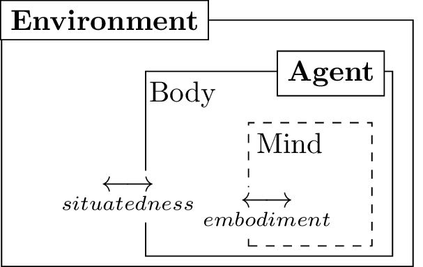
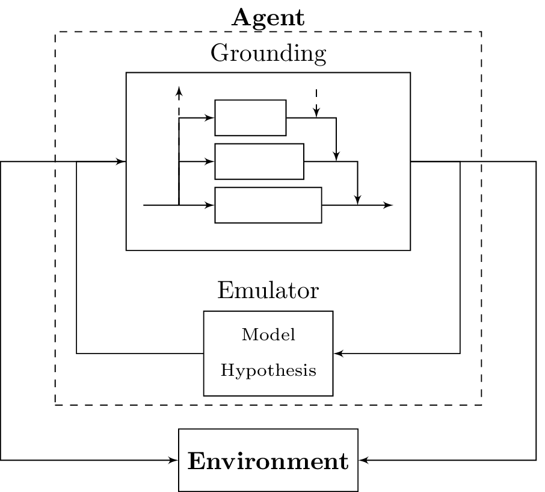
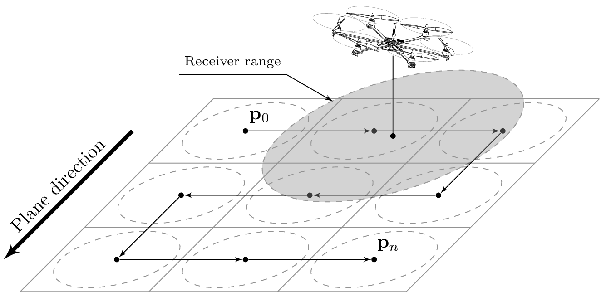
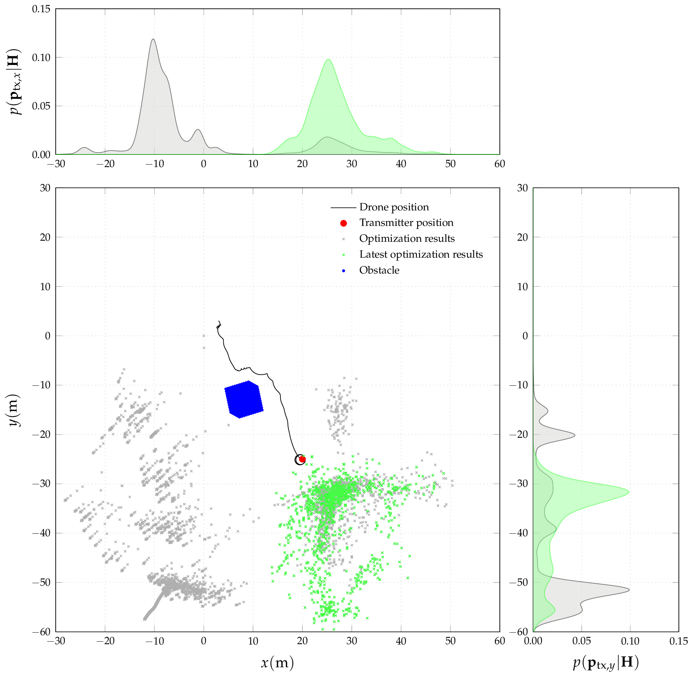

Starting from the basic paradigm of perception–action, an avionic system for an UAV aimed at avalanche rescue is derived as autonomous agent. Using last advances in cognitive science, situatedness and embodiment for the agent are analyzed, and exploited to reach the mission goal. Part of the searching algorithm is introduced as one of the complex behaviors in which the agent must decide between different intents.
A stacked layers architecture is presented. At the lower levels, algorithms run for stabilization and obstacles avoidance; those ensure drone’s survival. Upper layer provides an estimation of orientation over ground and generates a reference in such a way that ARTVA signal is maximized, while safety for rescuers is ensured. Highest layers are reserved for searching routines. It is well known that pinpointing a victim – due to the particular shape of near-field transmitting source – using ARTVA signal is a difficult task. In this paper we present a way for searching buried victims that differs from the one presented in related works, in which two routines works together in order to find the field origin. The first routine exploits gradient information to reach the highest signal strength location, while the second tries to identify a confidence region through an internal emulation of the field (optimization problem).
When no beacons are detected the agent behavior changes and a search over a wider region is performed. So far, boundaries for the region are provided by an external agent, such as a rescuer. The switching between the two intent–i.e. scanning vs. active searching–is operated by an implementation of the radar detection algorithm.
The Artificial Intelligence is one of the study fields that has to been inspect in deriving autonomous robots for emergency—response. Create an agent that is able to respond creatively to internal and external stimuli seems to be the key to solve different problems that may be perceived as orthogonal in modern robotics.
Starting from the ’70, the first formulations and implementations of artificial—intelligence (AI) provided the idea that a cognitive agent is based on internal representation of external world, using symbols. Action should be based on manipulation of that extrapolated base symbols, in a perception—action model (PA). From the debate introduced by this vision, cognitive science diverged in more interpretations (Van Gelder 1995; Beer 2003): computational (based on symbols), dynamical (founded upon the idea that intelligence is also in state evolution of a dynamical system) and connectivism (that led to neural networks theory).
In the latter year, with an increment of computational power, the fusion of those implementations is considered the way to follow in definition of an intelligent agent.

Apart the basic behavior, the advantages of PA maps are related to the implementation of extremely complex behavior using other techniques such as:
subsumption and grounding (Harnad 1990) (implementation of embodiment of the agent as a stacked architecture in which each layer perform different operation with different priorities)
innate knowledge (Da Lio et al. To Be Published) (or internal emulation of external environment)
bootstrapping, historical and shared knowledge (Sun, Merrill, and Peterson 2001; Shevchenko, Windridge, and Kittler 2009; Windridge, Felsberg, and Shaukat 2013) (a complete cognitive system should be able to identify and define its motion primitives, exploring the motion domain through the use of fuzzy and random inputs).
[fig:complex_pa] 
Defined in such a way, PA covers some of the key aspects of autonomous robots in general, that are fundamental for robot that operates in rescue operations:
sensor fusion for autonomous navigation
path planning and guidance
raise selective criteria in achieving specific tasks
With the common implementation for subsumption and grounding, that we have already introduced, multiple task are organized under a policy fixed into the architecture implementation. Variation of operational policies may be achieved, thought, using weight that shall be assigned to each level of the layer.
Further refinement, proposed with implementation of our agent, is the multidimensional organization of such architecture, in order to achieve not only competitive policies, but also chained policies, in which the same objective could be reached as a collaboration of multiple algorithm that acts differently in function of the actual perceived environment. This idea grants an easy way to introduce history of perceived environment.
In this section a general overview of the avionic model of a rescue agent in avalanche environment is presented, in a form of a PA map, that differs from what already presented in literature (Piniés and Tardós 2006; Piniés, Tardós, and Neira 2006; Manuel Grauwiler 2010). A visual representation for such a map is in figure.
General Perception–Action map for our drone
The dynamic of the VTOL is an important part of the whole system. Control theory should be used to stabilize the drone flight as first and most important policy. In such a block also tracking and fail safe routine should be implemented. Given as base architecture an hexacopter, due to balancing of characteristics such as weight (constrained by rescue operator requirements) and control thrust (necessary in mountain flight), commercial control board already implement control loop for stabilization, tracking and some failsafe algorithm. One of the advantage of our PA is the capability to be injected in such commercial board almost transparently.
An avalanche as an huge amount of kinetic energy. Under this assumption, we make the hypothesis that our drone will face as obstacle mainly pillars, trees and mounds of snow. Taken into account this consideration about the surroundings, it is useless to define a complete internal map of obstacles and define an optimal trajectory to avoid them.
Example of obstacle avoidance algorithm behavior
The basic idea is to generate a run-away control action on the center of mass of the vehicle when it senses an obstacle close to its position. This control action will be summed up to the control action of the lower layers. From a more theoretical point of view, we are exploiting the idea of gradient of Voronoi map of the environment (Choset and Burdick 2000), evaluated only locally. This simplification gather different advantage to the final algorithm:
we do not need high computational power and memory required to project symbol of surroundings into agent mind space, that means that algorithm fits hardware specification
obstacle avoidance imposes minor constraints on upper layers of searching algorithms, with respect convoluted algorithms.
more reliable routine with respect Bayesian based maps, because of its local deterministic nature
while the main drawbacks are:
moving on an non-optimal path
it is based on simplification, and real life is always harder than what we aspect
HAAL (height above average terrain) algorithm should be implemented considering that distance of the drone to the soil must be high enough to avoid contact with rescuers and low enough to get the best possible signal strength. With respect to obstacle avoidance, that acts as a control on the lateral dynamic, that is quite slow, altitude keeping acts on vertical dynamic that is really fast, and need a more reliable implementation.
A statistical perception, based upon knowledge of the orientation state of the drone (SLAM problem), grant the ability to identify the characteristic vector of the mean plane of surface. Once this vector is identified, a constant distance (e.g. \(4\) m) shall be maintained.
Altitude keeping problem
In the next section, block that are derived to pinpoint a victims are explained. With those block we introduce the multidimensional implementation of the upper PA map.
To pinpoint a victim we change the structure of the common grounded map. Using a representation of perceived environment (emulation), we try to reach two parallel goals: identify a signal and pinpoint to the source of such signal. The drone should be able not only to pinpoint the victim as fast as possible (searching maximum signal), but also to apprehend the actual position of the victim. In fact an ARTVA transmitter is perceived from a good quality receiver in a range of \(\sim40\) m (ETSI 300 2001; Hereford and Edgerly 2000).
[fig:planeecplanation] 
Under the hypothesis of victim with ARTVA transmitter (Legge Italiana 2003), our drone should carry an ARTVA signal probe. One of the first problem is to identify target signal from background noise: this is a typical supervised signal detection based upon risk criterion: the idea is to minimize the average cost incurred by erroneous decision (Duda, Hart, and Stork 2012). The result to be achieved is the transition between two concurrent state: exploration (in figure [fig:complex_pa] on the right) and pinpointing (on the left).
While signal is not detected, we mimic behavior of real rescuer, trying to cover the avalanche front area flying in straight lines, in such a way that a grid is generated. The grid should be completely covered, and it is generated under the assumption that each element is smaller with respect to receiving radius. The grid is figured internally as an array of points localized through GPS, associated with a confidence distance (a sphere in which drone has to fly before reaching the next point). The ability to scope next points is granted by lower levels of the PA map.
If ARTVA magnetic field is identified, radar routines change detection state in order to actually pinpoint the position of the victim.
The actual search, once magnetic field is sensed, tries to runs towards maximum, with an adaptive filter, that steer the system in direction of the source; intensity of field defines drone speed, with a direction that is adapted from previous perceptions.
In parallel, an emulation of real field is implemented, as mathematical model of near–field magnetic dipole source (Ramo, Whinnery, and Van Duzer 2008; Knoepfel 2008). The emulator tries to understand the position of the source as a solution of an optimization problem, using previous solution as a guess that is adapted through time. Solution of successive optimization routine generates a vector of position.
Saved position are used to estimate actual position of buried victim (Parzen window estimator), that gives us the location within a certain field of confidence. When drone is in such a confidence area, it releases the dart to signal the position to rescuers.
Active searching component of the map was developed and simulated in a simplified representation of the environment. An example of a simulation run, projected on \(\hat{x} \times \hat{y}\) plane, is presented in figure [fig:simulation].
 [fig:simulation]
300, ETSI EN. 2001. E.R.M. Avalanche Beacons - Transmitter-Receiver Systems. ETSI.
Beer, Randall D. 2003. “The Dynamics of Active Categorical Perception in an Evolved Model Agent.” Adaptive Behavior 11 (4). Sage Publications: 209–43.
Choset, Howie, and Joel Burdick. 2000. “Sensor-Based Exploration: The Hierarchical Generalized Voronoi Graph.” The International Journal of Robotics Research 19 (2). SAGE Publications: 96–125.
Da Lio, M., F. Biral, E. Bertolazzi, M. Galvani, P. Bosetti, D. Windridge, A. Saroldi, and F. Tango. To Be Published. “Artificial Co-Driver as a Universal Enabling Technology for Future Intelligent Vehicles and Transportation Systems.” Transaction on Intelligent Transportation Systems. IEEE.
Duda, Richard O., Peter E. Hart, and David G. Stork. 2012. Pattern Classification. John Wiley & Sons.
Harnad, Stevan. 1990. “The Symbol Grounding Problem.” Physica D: Nonlinear Phenomena 42 (1). Elsevier: 335–46.
Hereford, J., and B. Edgerly. 2000. “457 Khz Electromagnetism and the Future of Avalanche Transceivers.” BackCountry Access.
Italiana, Repubblica. 2003. “Legge 24/12/2003 N. 363.” Gazzetta Ufficiale.
Knoepfel, Heinz E. 2008. Magnetic Fields: A Comprehensive Theoretical Treatise for Practical Use. John Wiley & Sons.
Manuel Grauwiler, Luc Oth. 2010. Fully Autonomous Search for Avalanche Victims Using an Mav. Eidgenössische Technische Hochschule Zürich.
Piniés, P., and J. D. Tardós. 2006. “Fast Localization of Avalanche Victims Using Sum of Gaussians.” In Proceedings of Ieee International Conference on Robotics and Automation, 3989–94. IEEE.
Piniés, P., J. D. Tardós, and J. Neira. 2006. “Localization of Avalanche Victims Using Robocentric Slam.” In IEEE/Rsj International Conference on Intelligent Robots and Systems, 3074–9. IEEE.
Ramo, Simon, John R. Whinnery, and Theodore Van Duzer. 2008. Fields and Waves in Communication Electronics. John Wiley & Sons.
Shevchenko, M., D. Windridge, and J. Kittler. 2009. “A Linear-Complexity Reparameterisation Strategy for the Hierarchical Bootstrapping of Capabilities Within Perception–action Architectures.” Image and Vision Computing 27 (11). Elsevier: 1702–14.
Sun, R., E. Merrill, and T. Peterson. 2001. “From Implicit Skills to Explicit Knowledge: A Bottom-up Model of Skill Learning.” Cognitive Science 25 (2). Elsevier: 203–44.
Van Gelder, T. 1995. “What Might Cognition Be, If Not Computation?” The Journal of Philosophy 92 (7). JSTOR: 345–81.
Windridge, D., M. Felsberg, and A. Shaukat. 2013. “A Framework for Hierarchical Perception–Action Learning Utilizing Fuzzy Reasoning.” IEEE Transactions on Cybernetics 43 (1). IEEE: 155–69.